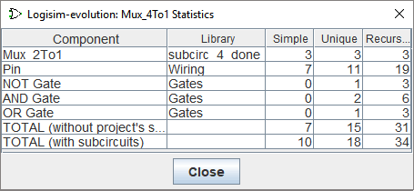

项目菜单
- 添加电路...
-
向当前项目添加一个新电路。Logisim 会要求您为新电路命名。该名称不得与项目中任何现有电路重复。
- 添加 VHDL 实体...
-
尚未记录。
- 导入 VHDL 实体...
-
尚未记录。
- 加载库
- 卸载库...
-
从项目中卸载当前库。Logisim 不允许卸载任何当前使用中的库，包括包含项目电路中组件的库，以及包含工具栏上或鼠标映射中所用工具的库。
- 上移电路
-
将当前显示的电路在项目电路列表中上移一位，这个顺序会显示在资源管理器窗格中。
- 下移电路
-
将当前显示的电路在项目电路列表中下移一位，这个顺序会显示在资源管理器窗格中。
- 设为主电路
-
将当前显示的电路设为项目的主电路。如果当前电路已经是项目的主电路，此菜单项将呈灰色。主电路唯一的意义是：打开项目文件时首先显示该电路。
- 删除电路
-
从项目中移除当前显示的电路。Logisim 将阻止您删除用作子电路的电路，并且还会阻止您删除项目中的最后一个电路。
- 恢复默认外观
-
如果您编辑过电路外观，此菜单项会将其恢复为默认外观。仅当编辑电路外观时此菜单项才启用。默认外观可以通过库的使用新框布局属性更改。
- 编辑电路布局
-
切换到电路布局编辑模式。组件布局决定电路的工作方式。此菜单项通常处于禁用状态，因为您通常已经在编辑布局。
- 编辑电路外观
-
切换到电路外观编辑模式，用于编辑该电路作为子电路放入其他电路时的显示方式。
- 分析电路
-
注意： 当前版本的 Logisim-evolution 中默认禁用此菜单。可以通过命令行选项重新启用。
计算当前电路对应的真值表和布尔表达式，并将其显示在组合分析窗口中。分析过程仅对组合电路有效。完整说明见组合分析章节。 - 获取电路统计
-
显示一个对话框，其中包含当前显示电路所用组件的统计数据。对话框包含一个五列表格：

- 组件：组件的名称。
- 库：组件来源的库名称。
- 直接：该组件直接出现在所查看电路中的次数。
- 唯一：该组件在电路层次中出现的次数，其中层次中每个子电路只计算一次。
- 递归：该组件在电路层次中出现的次数，其中每个子电路按其出现的次数计算。
以使用子电路一节中的示例为例：使用三个 2:1 多路选择器构建一个 4:1 多路选择器，可以最容易地说明“唯一”和“递归”的区别。2:1 多路选择器包含两个与门（而 4:1 电路本身不包含与门），因此与门的“唯一”计数为 2；但如果按此图构建 4:1 多路选择器，三个 2:1 多路选择器各需要 2 个与门，所以“递归”计数为 6。
如果使用的是已加载 Logisim 库中的电路，这些组件会被视为
黑盒
：库电路的内容不包含在唯一计数和递归计数中。 - 选项...
-
打开项目选项窗口。
下一节： 仿真菜单。